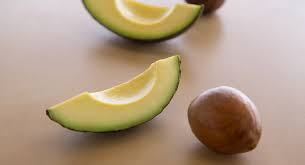
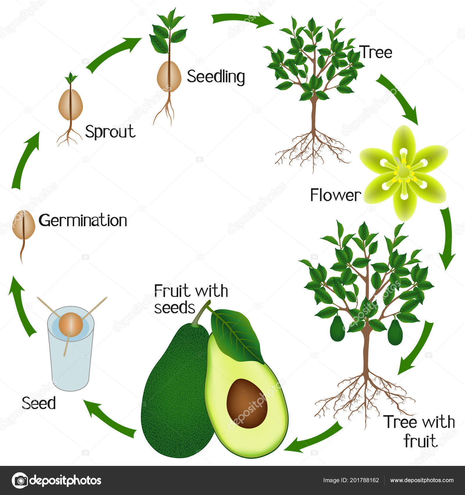
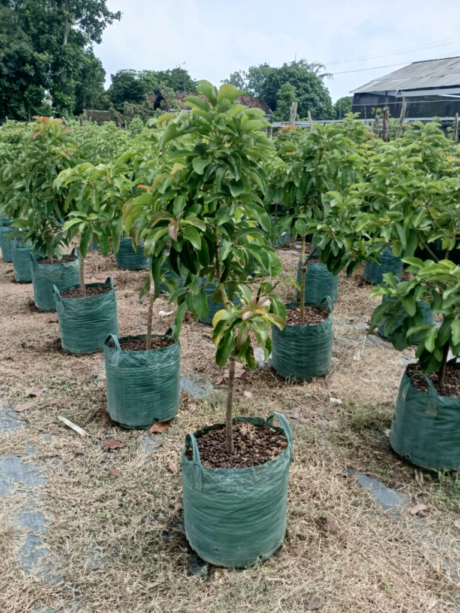
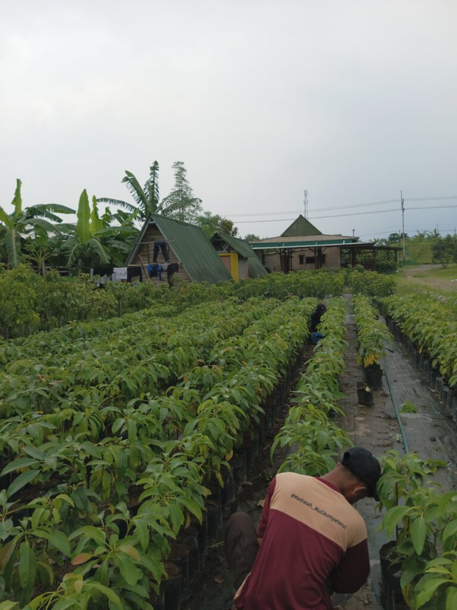
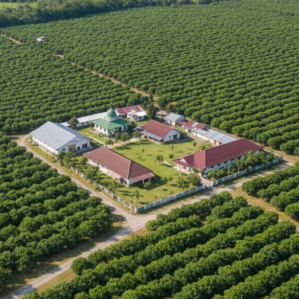

Perjalanan dari Benih Menuju Buah
Memahami transformasi luar biasa dari satu biji menjadi pohon alpukat yang tumbuh subur dan menghasilkan buah yang bergizi.

Seleksi Benih
Mengidentifikasi benih berkualitas tinggi dengan sifat genetik optimal untuk ketahanan terhadap penyakit dan kualitas buah..

Pengecambahan
Menciptakan kondisi ideal untuk perkecambahan biji melalui suhu, kelembapan, dan kadar air yang terkontrol..

Perkembangan Anak Pohon
Merawat tanaman muda dengan nutrisi dan perlindungan yang seimbang hingga siap ditanam.

Pendirian Kebun
Penanaman strategis di iklim mikro yang optimal dengan jarak tanam yang tepat, irigasi, dan persiapan tanah yang baik.

Pematangan & Panen
Memantau pertumbuhan selama bertahun-tahun dan memanen dengan teknik presisi untuk kualitas terbaik.

Budidaya Berkelanjutan
Menjaga kesehatan kebun melalui pengelolaan hama terpadu dan praktik berkelanjutan.